비NCS 자체 개발 교과목 · 128시간 · 평가방법 포트폴리오 (100점)
팀으로 주제를 정하고 공공데이터를 확보해, 요구사항 도출 → DB · API · 화면 설계 → 웹서버 구축 차례로 서비스를 완성하는 과제입니다. 인증이 걸린 화면에서 조회 · 등록 · 수정 · 삭제가 돌아야 하고, 수행 결과를 결과보고서로 정리해 발표합니다.
3 ~ 4인 한 팀이고 주제는 자유입니다. 앞의 열여섯 교과에서 배운 것이 여기서 한꺼번에 나옵니다. 새로 배울 기술은 거의 없고, 이어 붙이는 일이 대부분입니다.
| 묶음 | 능력단위요소 | 무엇을 하는가 | 시간 | 배점 |
|---|---|---|---|---|
| ① | 프로젝트 개요 및 수행 전략 수립 | 데이터 확보 · 진단 · 주제와 목표 · 요구사항 · 계획서 | 24 | 20 |
| ② | 프로젝트 시스템 설계 | 유스케이스 · 화면 흐름도 · ERD · 테이블 정의서 · API 명세 | 40 | 30 |
| ③ | 공공데이터 융합 웹서버 구축 | 정제와 적재 · CRUD API · 인증 · 예외 · 화면 연동 · 검색 | 56 | 40 |
| ④ | 프로젝트 마무리 및 발표 | 테스트 검증 · 오류 조치 · 결과보고서 · 발표 · 질의응답 | 8 | 10 |
스무 항목 100점입니다. ① 은 4점씩 다섯, ② 는 6점씩 다섯, ③ 은 8점씩 다섯, ④ 는 2점씩 다섯입니다.
앞 교과 「공공데이터 융합 DBMS 구축」 에서도 공공데이터로 서비스를 만들었습니다. 그때는 주제와 뼈대가 주어졌고, 여기서는 주제부터 팀이 정합니다. 무엇을 만들지 정하는 일이 과제에 들어온다는 것이 가장 큰 차이입니다.
| 성취기준 | 기준의 말 | 이 평가에서 |
|---|---|---|
| 1.1 | 공공데이터포털에서 프로젝트 목적에 적합한 공공데이터를 검색 · 확보하고 출처 · 제공기관 · 갱신주기 · 이용허락범위를 명시 | 내려받기 화면을 찍고 네 값을 보고서에 적습니다 |
| 1.2 | 확보한 데이터의 구조와 활용 가능성을 분석하여 주제와 목표를 정의하고 요구사항을 도출 | 컬럼 진단표 · 주제와 목표 · 요구사항 목록 열 건 |
| 1.3 | 개발 범위 · 일정 · 역할분담 · 개발환경을 포함한 수행 전략을 프로젝트 계획서로 작성 | 일정표와 역할표를 계획서에 묶습니다 |
| 2.1 | 요구사항을 기능 단위로 정리하고 유스케이스와 화면 흐름을 설계 | 유스케이스 그림과 명세 · 화면 흐름도와 화면 목록 |
| 2.2 | 공공데이터의 구조를 분석하여 테이블 · 관계 · 제약조건을 갖춘 데이터베이스를 ERD 로 설계 | 표 둘 이상 · 외래키 한 건 이상 · 테이블 정의서 |
| 2.3 | 프론트엔드 · 백엔드 · 데이터베이스의 시스템 구성과 API 명세를 설계 문서로 작성 | 구성도 한 장과 엔드포인트 여덟 줄 |
| 3.1 | 설계한 ERD 에 따라 데이터베이스를 구축하고 확보한 공공데이터를 정제하여 적재 | 임시 표를 거쳐 정제한 뒤 적재 건수를 제시합니다 |
| 3.2 | 백엔드에서 REST API 와 CRUD 기능을 구현하고 인증 및 예외 처리를 적용 | 계층을 나눠 구현하고 조인 조회를 한 건 넣습니다 |
| 3.3 | 프론트엔드 화면에서 API 를 연동하여 조회 · 등록 · 수정 · 삭제가 동작하는 서비스를 통합 구축하고 검증 | 다섯 화면이 다 도는 장면을 캡처합니다 |
| 4.1 | 구현한 기능을 테스트 케이스에 따라 검증하고 결과 및 오류 조치 내역을 정리 | 테스트 케이스 표와 오류 조치 표 |
| 4.2 | 프로젝트 수행 과정과 결과물을 결과보고서와 실행화면 캡처로 취합 | 여섯 절짜리 보고서로 묶습니다 |
| 4.3 | 프로젝트 결과를 발표하고 질의에 대해 설계 · 구현의 근거를 설명 | 15분 발표와 질의응답 |
기준 열둘이 채점 항목 스물로 쪼개져 있습니다. 「분석하여」 와 「설계할 수 있다」 가 절반을 차지한다는 점을 보십시오. 만드는 것만큼 왜 그렇게 만들었는지를 본다는 뜻입니다.
열여섯 단원을 네 묶음으로 나누었고 능력단위요소와 그대로 짝이 맞습니다. 앞 여섯이 개요와 전략, 다음 다섯이 설계, 그 다음 넷이 구축, 마지막 하나가 마무리입니다.
주제는 팀이 정하지만 교안에서는 한 가지 예를 끝까지 따라갑니다. 공공데이터포털의 「전국 주차장 정보 표준데이터」 로 만드는 「우리동네 주차장 찾기」 입니다. 같은 예가 데이터 진단 · ERD · API · 화면까지 이어지므로 앞 단계의 결정이 뒤에 어떻게 나타나는지를 볼 수 있습니다.
여러분의 주제는 저마다 다릅니다. 그래도 뼈대는 같습니다 — 되풀이되는 값을 찾아 표를 나누고, 목록과 상세와 등록과 수정과 삭제를 만들고, 로그인을 걸고, 검색을 붙입니다. 예를 그대로 옮기지 말고 같은 자리에 무엇이 오는지를 보십시오.
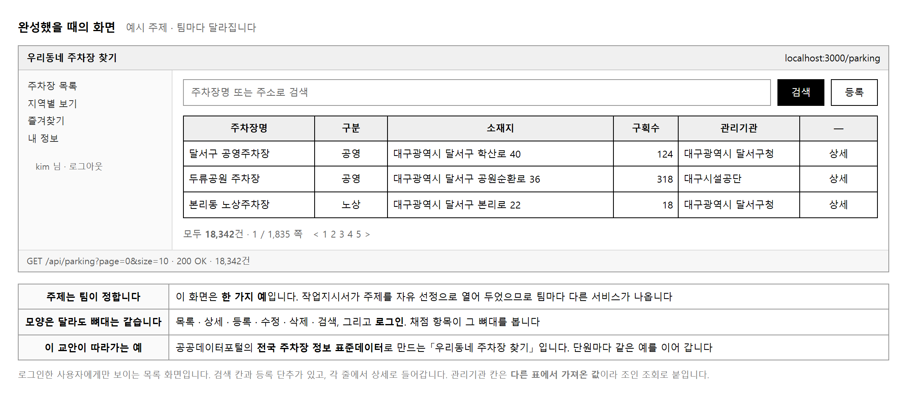
채점 항목 14 가 「실제로 동작하도록」 이라고 적습니다. 화면을 예쁘게 그려 놓아도 값이 서버에서 오지 않으면 점수가 되지 않습니다. 아래 다섯 가지가 도는 장면이 있어야 합니다.
| 동작 | 누르면 | 확인할 것 |
|---|---|---|
| 목록 | 로그인 후 첫 화면 | 총 건수가 수천 이상이고 쪽이 나뉩니다 |
| 검색 | 검색어를 넣고 검색 | 건수가 줄어듭니다 |
| 상세 | 한 줄을 누름 | 다른 표에서 온 값이 함께 보입니다 |
| 등록 · 수정 | 양식을 채우고 저장 | 목록에 반영되고 새로 고쳐도 남아 있습니다 |
| 삭제 | 확인 후 삭제 | 목록에서 사라집니다 |
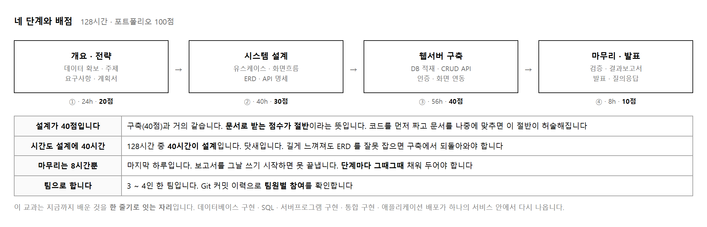
3 ~ 4인 한 팀입니다. 구축 요건에 「Git 커밋 이력으로 팀원별 참여 확인」 이 적혀 있으므로 모두가 코드를 올려야 합니다.
| 나누는 방식 | 모습 | 위험 |
|---|---|---|
| 층으로 나누기 | 백엔드 2 · 프론트 2 | 가운데 API 명세가 어긋나면 끝에 가서 터집니다 |
| 기능으로 나누기 | 주차장 담당 · 회원 담당 | 한 사람이 화면과 서버를 다 해야 해서 느립니다 |
| 섞기 | 층으로 나누되 설계는 같이 | 가장 무난합니다. API 명세를 함께 적으면 어긋나지 않습니다 |
> git switch -c feat/parking-api # 기능마다 브랜치를 딴다 > git commit -m "주차장 목록 조회 API 추가" > git push -u origin feat/parking-api # GitHub 에서 Pull Request 를 올려 팀원이 보고 머지한다
main 에 바로 올리면 서로 덮어씁니다.
브랜치를 나누고 Pull Request 로 합치면
누가 무엇을 했는지가 이력에 그대로 남아 채점 자료가 됩니다.
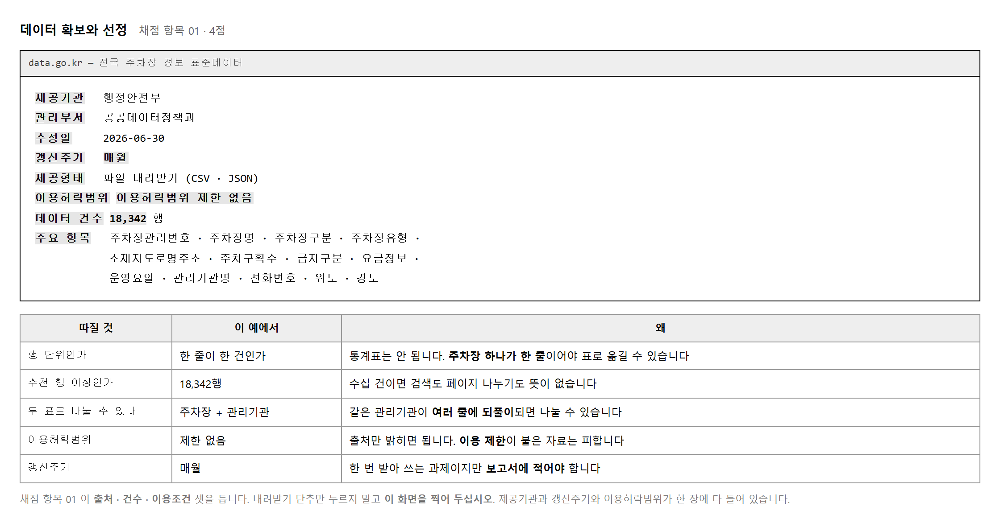
작업지시서가 데이터 조건을 못 박았습니다 — 행 단위 · 수천 행 이상 · 두 표 이상으로 정규화 가능. 세 조건이 사실은 하나를 가리킵니다. 표로 옮겨 쓸 수 있는 자료인가입니다.
| 이런 자료는 피합니다 | 왜 |
|---|---|
| 통계표 · 집계표 | 한 줄이 한 건이 아니라 이미 합친 숫자입니다. CRUD 할 것이 없습니다 |
| 몇십 건짜리 목록 | 검색도 쪽 나누기도 뜻이 없습니다 |
| 칸이 서너 개뿐 | 나눌 것이 없어 표 하나로 끝납니다 |
| 이용 제한이 붙은 것 | 보고서에 적기 곤란합니다 |
| 값 | 이 예에서 |
|---|---|
| 자료 이름 | 전국 주차장 정보 표준데이터 |
| 출처 · 제공기관 | 공공데이터포털 (data.go.kr) · 행정안전부 |
| 건수 | 18,342행 |
| 갱신주기 | 매월 |
| 이용허락범위 | 이용허락범위 제한 없음 |
내려받기 단추만 누르고 넘어가기 쉬운데, 이 화면을 찍어 두는 것이 항목 01 의 4점입니다. 나중에 다시 찾으려면 그 자료가 목록 어디에 있었는지부터 헤매게 됩니다.
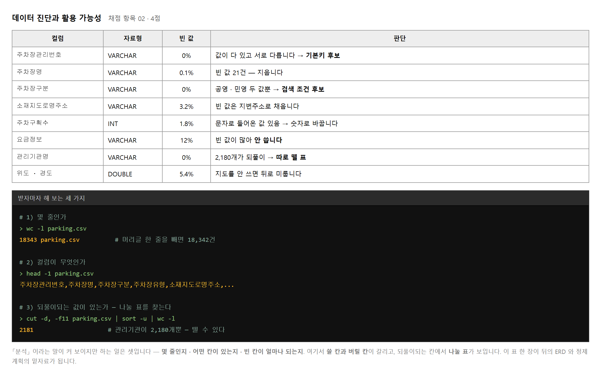
「분석」 이라는 말에 겁먹을 것 없습니다. 세는 일이 전부입니다.
wc -l 로 세도 됩니다.# 되풀이되는 칸 찾기 — 이 한 줄이 ERD 의 출발점입니다 > cut -d, -f11 parking.csv | sort -u | wc -l 2181 # 머리글 한 줄을 빼면 2,180개 # 값이 몇 가지뿐인 칸 — 검색 조건으로 쓰기 좋습니다 > cut -d, -f3 parking.csv | sort | uniq -c 11204 공영 7138 민영
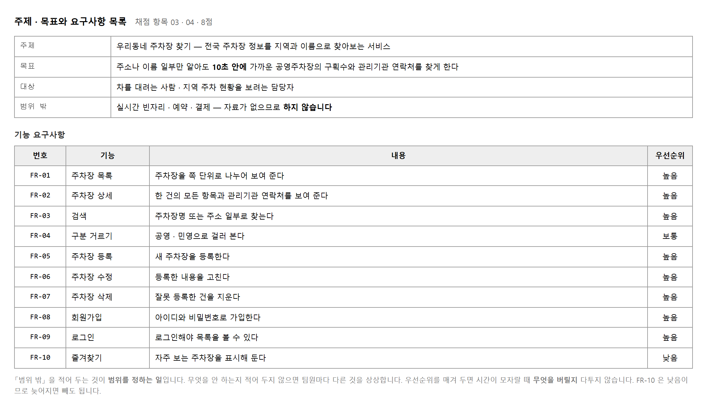
| 이렇게 적으면 흐립니다 | 이렇게 적으면 선명합니다 |
|---|---|
| 주차장 정보를 편리하게 제공한다 | 주소나 이름 일부만 알아도 10초 안에 가까운 공영주차장의 구획수와 연락처를 찾게 한다 |
| 사용자 친화적인 서비스를 만든다 | 지역을 고르면 세 번 눌러 상세까지 간다 |
왼쪽은 어떤 서비스에도 붙일 수 있는 말이라 목표 노릇을 못 합니다. 오른쪽은 다 만든 뒤 확인할 수 있는 문장입니다.
「실시간 빈자리」 를 요구사항에 적으면 안 됩니다. 확보한 자료에 그 칸이 없기 때문입니다. 요구사항을 적기 전에 진단표를 다시 보십시오. 있는 칸으로 할 수 있는 일만 적습니다.
| 요구사항 | 쓰는 칸 | 가능한가 |
|---|---|---|
| 이름으로 검색 | 주차장명 | 됩니다 |
| 지역별 보기 | 소재지도로명주소 → 시도 · 시군구 | 잘라 만들면 됩니다 |
| 공영만 보기 | 주차장구분 | 됩니다 |
| 실시간 빈자리 | — | 칸이 없어 안 됩니다 |
| 지도에 표시 | 위도 · 경도 | 됩니다. 다만 빈 값이 5% 있습니다 |
우선순위를 매겨 두면 시간이 모자랄 때 무엇을 버릴지 다투지 않습니다. 낮음으로 둔 것은 처음부터 「못 하면 뺀다」 고 합의해 두는 셈입니다.
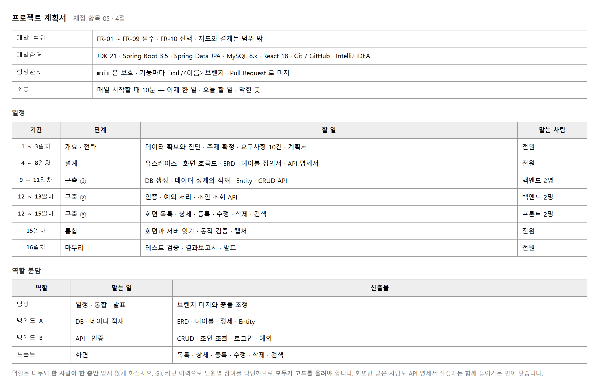
| 이렇게 적으면 확인이 안 됩니다 | 이렇게 적으면 확인됩니다 |
|---|---|
| 4 ~ 8일차: 설계 | 4 ~ 8일차: 유스케이스 · 화면 흐름도 · ERD · 테이블 정의서 · API 명세서 다섯 문서 |
| 9 ~ 15일차: 개발 | 9 ~ 11일차 DB 적재와 CRUD API · 12 ~ 13일차 인증과 조인 조회 · 12 ~ 15일차 화면 다섯 |
왼쪽은 그날이 되어도 끝났는지 알 수 없습니다. 오른쪽은 문서 다섯 장이 있으면 끝난 줄 압니다.
JDK 21 Spring Boot 3.5.x (Spring Data JPA · Spring Security · Validation) MySQL 8.x React 18 (axios · react-router-dom) Git GitHub · 브랜치 feat/<이름> · Pull Request 로 머지 IDE IntelliJ IDEA · VS Code
버전을 적어 두면 팀원 사이에 버전이 달라 안 돌아가는 일이 줄어듭니다. 프로젝트를 만들 때 한 사람이 만들어 올리고 나머지가 받아 쓰는 편이 가장 안전합니다.
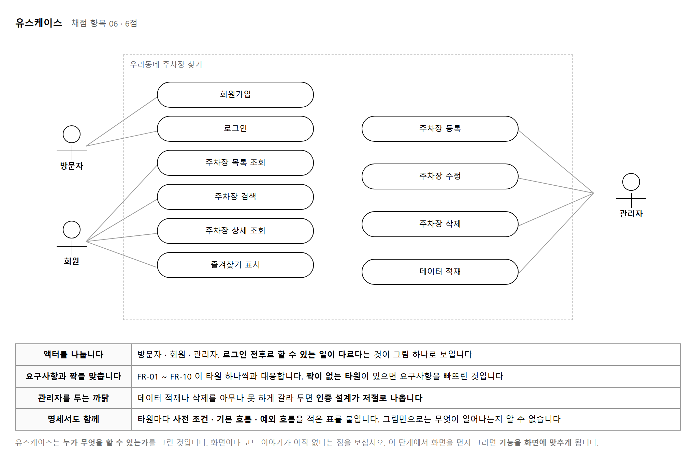
그림만 내면 무엇이 일어나는지 알 수 없습니다. 타원마다 표를 하나씩 붙입니다.
| 칸 | 보기 — 주차장 등록 |
|---|---|
| 유스케이스 | UC-05 주차장 등록 |
| 액터 | 관리자 |
| 사전 조건 | 관리자 권한으로 로그인되어 있다 |
| 기본 흐름 | ① 목록에서 등록을 누른다 → ② 양식을 채운다 → ③ 저장을 누른다 → ④ 목록으로 돌아가고 새 건이 보인다 |
| 예외 흐름 | 2-1 필수 칸이 비면 안내를 띄우고 저장하지 않는다 3-1 같은 관리번호가 이미 있으면 409 와 안내 |
| 사후 조건 | 주차장 한 건이 데이터베이스에 늘어난다 |
여기서 적은 「필수 칸이 비면」 이 구축 단계의 @Valid 가 되고,
「이미 있으면 409」 가 전역 예외 처리의 한 줄이 됩니다.
설계에서 적어 둔 만큼 구축이 빨라집니다.
예외 흐름을 비워 두면 나중에 화면에서 무엇을 보여 줄지 그때그때 정하게 됩니다.
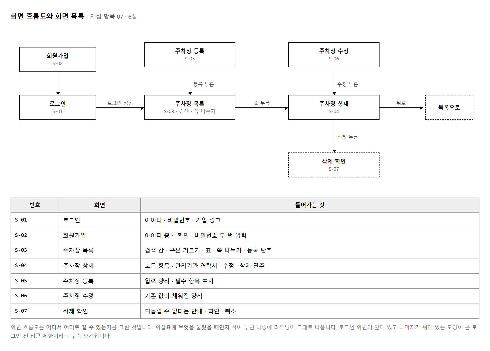
// 화면 번호와 경로를 짝지어 두면 옮겨 적기만 하면 됩니다
<Routes>
<Route path="/login" element={<Login />} /> {/* S-01 */}
<Route path="/signup" element={<Signup />} /> {/* S-02 */}
<Route path="/parking" element={<ParkingList />} /> {/* S-03 */}
<Route path="/parking/:id" element={<ParkingDetail />} /> {/* S-04 */}
<Route path="/parking/new" element={<ParkingForm />} /> {/* S-05 */}
<Route path="/parking/:id/edit" element={<ParkingForm />} /> {/* S-06 */}
</Routes>
S-07 삭제 확인은 화면이 아니라 띄우는 상자라 경로가 없습니다. 흐름도에서 점선으로 그려 둔 까닭도 거기 있습니다.
| 칸 | 보기 — S-03 주차장 목록 |
|---|---|
| 화면 번호 · 이름 | S-03 주차장 목록 |
| 경로 | /parking |
| 접근 권한 | 로그인한 회원 |
| 화면 요소 | 검색 칸 · 구분 거르기 · 표(주차장명 · 구분 · 소재지 · 구획수 · 관리기관) · 쪽 나누기 · 등록 단추 |
| 부르는 API | GET /api/parking |
| 이동 | 줄 누름 → S-04 · 등록 누름 → S-05 |
부르는 API 칸이 다음 단원의 API 명세와 이어집니다. 화면 정의서를 먼저 쓰면 필요한 엔드포인트가 저절로 나옵니다. 거꾸로 하면 쓰지 않는 API 를 만들거나 필요한 것을 빠뜨립니다.
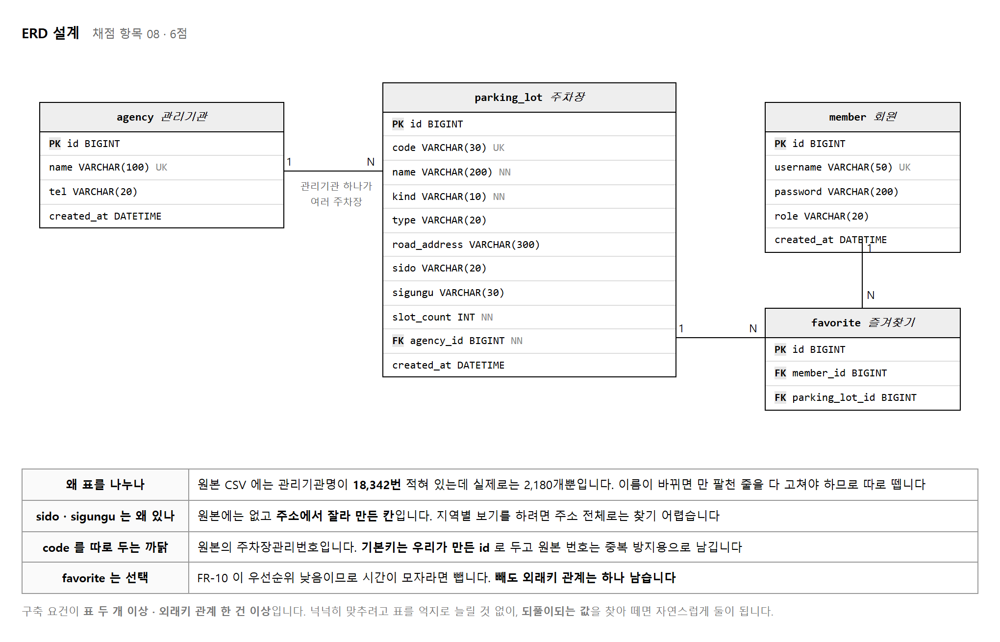
정규화라는 말을 몰라도 됩니다. 같은 값이 되풀이되면 뗀다는 것 하나입니다.
| 원본 CSV 한 줄 | 나눈 뒤 |
|---|---|
| … 관리기관명 = 대구시설공단, 전화번호 = 053-… | 주차장 줄에는 agency_id = 41 만 남고,
이름과 전화번호는 관리기관 표에 한 번만 |
| 나누면 좋은 점 | 안 나누면 |
|---|---|
| 고칠 곳이 하나 | 전화번호가 바뀌면 수백 줄을 고쳐야 합니다 |
| 자료가 어긋나지 않음 | 같은 기관인데 이름이 조금씩 달라진 줄이 섞입니다 |
| 조인 조회를 넣을 수 있음 | 구축 요건의 외래키 관계 한 건 이상을 못 채웁니다 |
-- 소재지도로명주소 = "대구광역시 달서구 학산로 40" sido = SUBSTRING_INDEX(주소, ' ', 1) -- 대구광역시 sigungu = SUBSTRING_INDEX(SUBSTRING_INDEX(주소, ' ', 2), ' ', -1) -- 달서구
지역별 보기를 하려면 주소 전체로 LIKE 검색을 해야 하는데 느립니다.
미리 잘라 칸으로 두고 인덱스를 걸면 빨라집니다.
이렇게 원본에 없는 칸을 만들어 내는 것도 설계입니다.
보고서에 「주소에서 잘라 만든 칸」 이라고 적어 두십시오.
id BIGINT AUTO_INCREMENT 를 기본키로 두고
원본 번호는 code 칸에 UNIQUE 로 남기면
중복 적재도 막고 원본과의 연결도 지킬 수 있습니다.
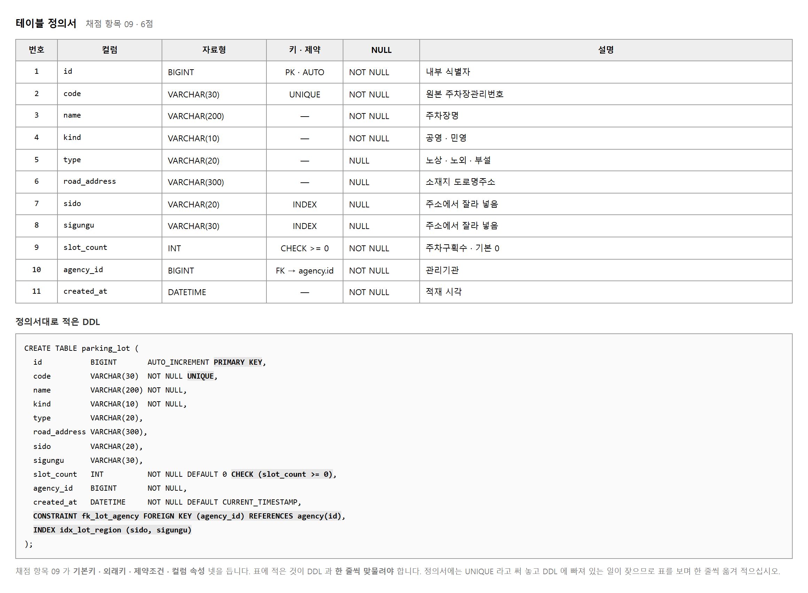
| 보는 것 | 이 표에서 | 빠지면 |
|---|---|---|
| 기본키 | id · AUTO_INCREMENT |
줄을 하나로 가리킬 수 없습니다 |
| 외래키 | agency_id → agency.id |
구축 요건 위반입니다 |
| 제약조건 | UNIQUE · NOT NULL · CHECK · DEFAULT | 빈 이름이나 음수 구획수가 들어갑니다 |
| 컬럼 속성 | 자료형과 길이 | VARCHAR(20) 에 긴 주소를 넣다 잘립니다 |
-- 실제 데이터에서 가장 긴 값을 재 보고 넉넉히 잡습니다 > SELECT MAX(CHAR_LENGTH(소재지도로명주소)) FROM staging_parking; 187 -- VARCHAR(300) 이면 넉넉합니다 > SELECT MAX(CHAR_LENGTH(주차장명)) FROM staging_parking; 96 -- VARCHAR(200)
| 고를 때 | 기준 |
|---|---|
| VARCHAR 길이 | 가장 긴 값의 1.5배쯤. 너무 넉넉히 잡을 필요는 없습니다 |
| 숫자 | 개수는 INT · 돈은 DECIMAL ·
좌표는 DOUBLE |
| 날짜 · 시각 | 날짜만이면 DATE · 시각까지면 DATETIME |
| 참거짓 | BOOLEAN (MySQL 에서는 TINYINT(1)) |
정의서에 UNIQUE 라고 적어 놓고 DDL 에 빠뜨리는 일이 잦습니다. 표를 보며 한 줄씩 옮겨 적고, 다 적은 뒤 거꾸로 한 번 더 대조하십시오.
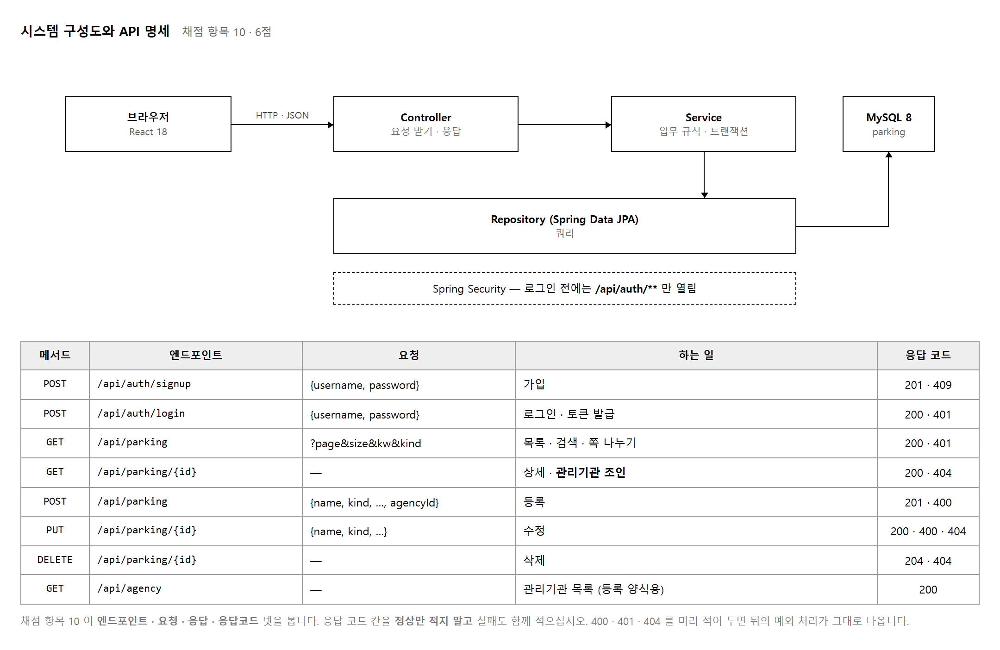
| 메서드 | 뜻 | 주소 짓는 법 |
|---|---|---|
| GET | 읽기 | /api/parking · /api/parking/{id} |
| POST | 만들기 | /api/parking |
| PUT | 통째로 바꾸기 | /api/parking/{id} |
| DELETE | 지우기 | /api/parking/{id} |
// 이렇게 지으면 규약에 어긋납니다 GET /api/getParkingList // 동사를 주소에 넣음 POST /api/parking/delete/3 // 지우는데 POST // 이렇게 짓습니다 — 주소는 자원, 동작은 메서드 GET /api/parking DELETE /api/parking/3
| 코드 | 언제 | 이 서비스에서 |
|---|---|---|
| 200 | 읽기 · 수정 성공 | 목록 · 상세 · 수정 |
| 201 | 만들기 성공 | 가입 · 등록 |
| 204 | 성공했고 줄 내용 없음 | 삭제 |
| 400 | 입력이 규칙에 안 맞음 | 필수 칸 누락 · 음수 구획수 |
| 401 | 로그인하지 않음 | 토큰 없이 목록 호출 |
| 403 | 권한 모자람 | 회원이 삭제를 시도 |
| 404 | 없는 자원 | 없는 번호의 상세 |
| 409 | 이미 있음 | 아이디 중복 · 관리번호 중복 |
명세서에 성공 코드만 적어 두면 실패했을 때 무엇을 돌려줄지 구축하면서 그때그때 정하게 되고, 같은 서비스 안에서 제각각이 됩니다. 여기서 미리 정해 두면 다음 단계의 전역 예외 처리가 그대로 나옵니다.
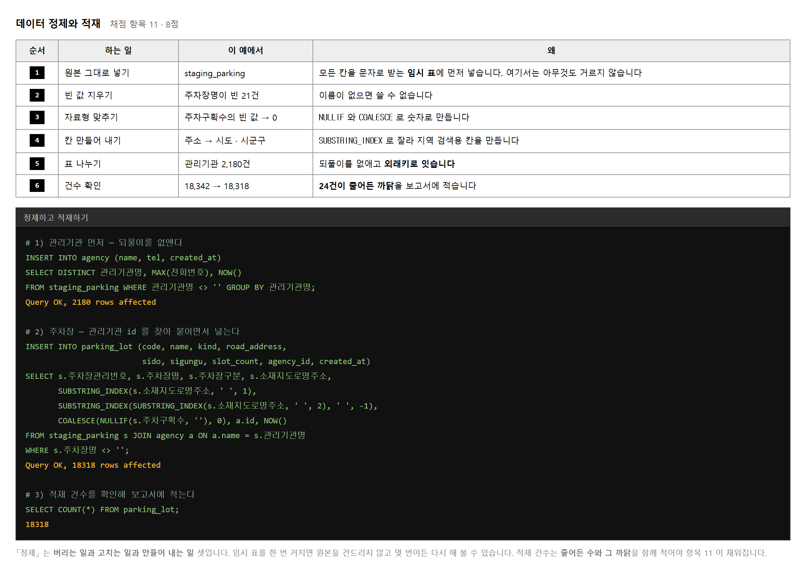
CSV 를 바로 parking_lot 에 넣으려 하면
자료형이 안 맞아 멈추고, 어디서 멈췄는지 찾기 어렵습니다.
모든 칸을 문자로 받는 임시 표에 먼저 통째로 넣으면
그 다음부터는 SQL 로 마음껏 들여다보고 고칠 수 있습니다.
CREATE TABLE staging_parking ( 주차장관리번호 VARCHAR(100), 주차장명 VARCHAR(300), 주차장구분 VARCHAR(50), 소재지도로명주소 VARCHAR(500), 주차구획수 VARCHAR(50), 관리기관명 VARCHAR(300), 전화번호 VARCHAR(100) -- 전부 VARCHAR 로 받습니다. 여기서는 아무것도 거르지 않습니다 ); LOAD DATA LOCAL INFILE 'parking.csv' INTO TABLE staging_parking CHARACTER SET utf8mb4 FIELDS TERMINATED BY ',' ENCLOSED BY '"' LINES TERMINATED BY '\n' IGNORE 1 ROWS; -- 머리글 한 줄 건너뜀
-- 빈 이름이 몇 건인가 SELECT COUNT(*) FROM staging_parking WHERE 주차장명 = '' OR 주차장명 IS NULL; -- 21 -- 숫자가 아닌 구획수가 있는가 SELECT DISTINCT 주차구획수 FROM staging_parking WHERE 주차구획수 REGEXP '[^0-9]' LIMIT 5; -- '', '미상', '10면' -- 관리기관명이 비어 있는 줄은 몇 건인가 — 외래키를 못 붙입니다 SELECT COUNT(*) FROM staging_parking WHERE 관리기관명 = ''; -- 3
| 언제 | 건수 | 보고서에 적을 말 |
|---|---|---|
| 원본 | 18,342 | 내려받은 CSV 의 줄 수 |
| 정제 후 | 18,318 | 주차장명이 빈 21건과 관리기관명이 빈 3건을 뺐습니다 |
| 적재 후 | 18,318 | SELECT COUNT(*) 로 확인 |
채점 항목 11 이 「정제하여 적재」 와 「적재 건수 제시」 둘을 봅니다.
건수만 적고 왜 줄었는지를 안 적으면 반쪽입니다.
빼기 전에 SELECT 로 세어 두면 그 숫자가 그대로 근거가 됩니다.
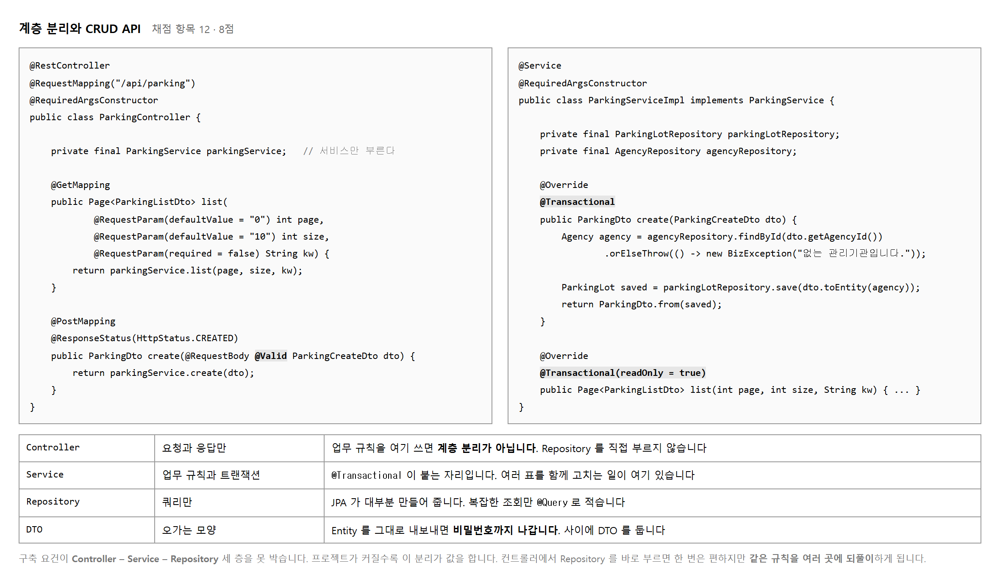
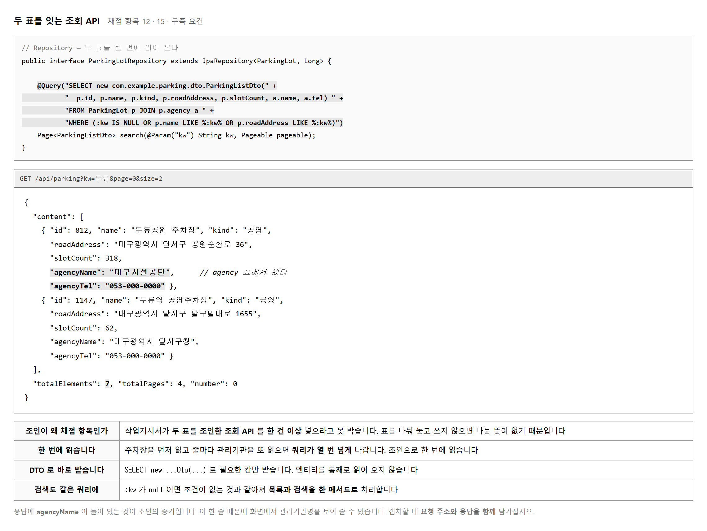
// 이렇게 하면 안 됩니다 — 엔티티를 그대로 내보냄
@GetMapping("/{id}")
public Member get(@PathVariable Long id) {
return memberRepository.findById(id).orElseThrow();
// 응답에 password 까지 나갑니다
}
// 이렇게 합니다 — 나갈 것만 담은 DTO
@GetMapping("/{id}")
public MemberDto get(@PathVariable Long id) {
return memberService.get(id);
}
| DTO 를 두면 | 안 두면 |
|---|---|
| 나갈 것만 나갑니다 | 비밀번호 · 내부 시각까지 나갑니다 |
| 응답 모양이 고정됩니다 | 엔티티에 칸을 더하면 응답이 말없이 바뀝니다 |
| 조인 결과를 담을 수 있습니다 | 다른 표의 값을 함께 내주기 어렵습니다 |
@GetMapping
public Page<ParkingListDto> list(
@RequestParam(defaultValue = "0") int page,
@RequestParam(defaultValue = "10") int size,
@RequestParam(required = false) String kw) {
return parkingService.list(page, size, kw);
}
1만 8천 건을 한 번에 내보내면 화면이 멈춥니다.
Page 로 돌려주면 총 건수와 총 쪽 수가 함께 나가
화면에서 쪽 단추를 그리기 쉽습니다.
나중에 붙이려면 화면까지 다시 고쳐야 하므로 처음부터 넣으십시오.
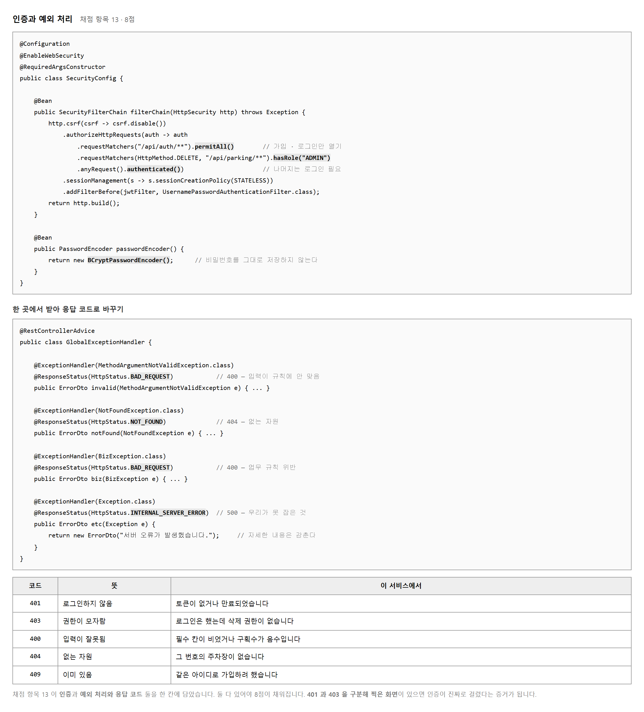
// 가입할 때 — 해시해서 넣습니다
Member member = Member.builder()
.username(dto.getUsername())
.password(passwordEncoder.encode(dto.getPassword()))
.role("ROLE_USER")
.build();
// 데이터베이스에는 이렇게 들어갑니다
// $2a$10$N9qo8uLOickgx2ZMRZoMy... ← 원래 비밀번호를 되돌릴 수 없습니다
평문으로 저장하면 데이터베이스를 보는 사람이 모든 비밀번호를 압니다. 해시는 되돌릴 수 없으므로 로그인할 때는 들어온 값을 같은 방식으로 해시해 둘을 견줍니다.
.requestMatchers("/api/auth/**").permitAll() // ① 먼저 만난 것이
.requestMatchers(HttpMethod.DELETE, "/api/parking/**").hasRole("ADMIN")
.anyRequest().authenticated() // ③ 마지막 그물
anyRequest() 를 맨 위에 두면 그 아래 줄은 한 번도 쓰이지 않습니다.
좁은 규칙을 위에, 넓은 규칙을 아래에 두십시오.
| 코드 | 해 보는 방법 | 무엇을 증명하나 |
|---|---|---|
| 401 | 토큰 없이 /api/parking 호출 |
로그인 없이는 못 본다 |
| 403 | 일반 회원 토큰으로 삭제 호출 | 권한을 갈라 두었다 |
| 400 | 이름을 비우고 등록 | 입력 검증이 돈다 |
| 404 | 없는 번호로 상세 호출 | 없는 자원을 가린다 |
네 화면이 있으면 인증과 예외 처리가 함께 증명됩니다. 채점 항목 13 이 둘을 한 칸에 담았으므로 둘 다 있어야 8점이 채워집니다.
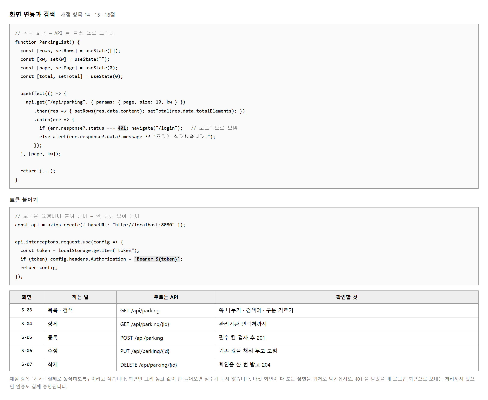
// 화면은 3000번, 서버는 8080번이라 브라우저가 막습니다
@Configuration
public class CorsConfig implements WebMvcConfigurer {
@Override
public void addCorsMappings(CorsRegistry registry) {
registry.addMapping("/api/**")
.allowedOrigins("http://localhost:3000")
.allowedMethods("GET", "POST", "PUT", "DELETE")
.allowedHeaders("*");
}
}
이것을 안 해 두면 서버는 멀쩡히 도는데 화면에서만 안 됩니다.
브라우저 콘솔에 CORS policy 라는 말이 보이면 여기부터 봅니다.
구축 첫날에 열어 두면 나중에 헤매지 않습니다.
// 검색어가 바뀌면 첫 쪽부터 다시 불러옵니다
function onSearch(word) {
setPage(0); // 이 줄을 빠뜨리면 3쪽에서 검색해 빈 화면이 나옵니다
setKw(word);
}
검색 화면을 따로 만들 것 없이 목록 화면의 검색 칸이면 됩니다.
서버 쪽 쿼리가 :kw 가 없으면 전체를 주도록 되어 있으므로
같은 API 로 목록과 검색이 다 됩니다.
| 번호 | 무엇 | 보이게 찍을 것 |
|---|---|---|
| 1 | 로그인 화면 · 로그인 성공 | 아이디와 이동한 목록 |
| 2 | 목록 | 총 건수와 쪽 단추 |
| 3 | 검색 | 검색어와 줄어든 건수 |
| 4 | 상세 | 관리기관명과 연락처 |
| 5 | 등록 전후 | 양식과 목록에 늘어난 줄 |
| 6 | 수정 전후 | 바뀐 값 |
| 7 | 삭제 전후 | 사라진 줄 |
| 8 | 로그아웃 상태 접근 | 로그인으로 튕기는 장면 |
여덟 컷이면 항목 14 와 15 의 16점을 받칠 수 있습니다. 등록 · 수정 · 삭제는 전후 두 장씩 찍어야 달라진 것이 보입니다.
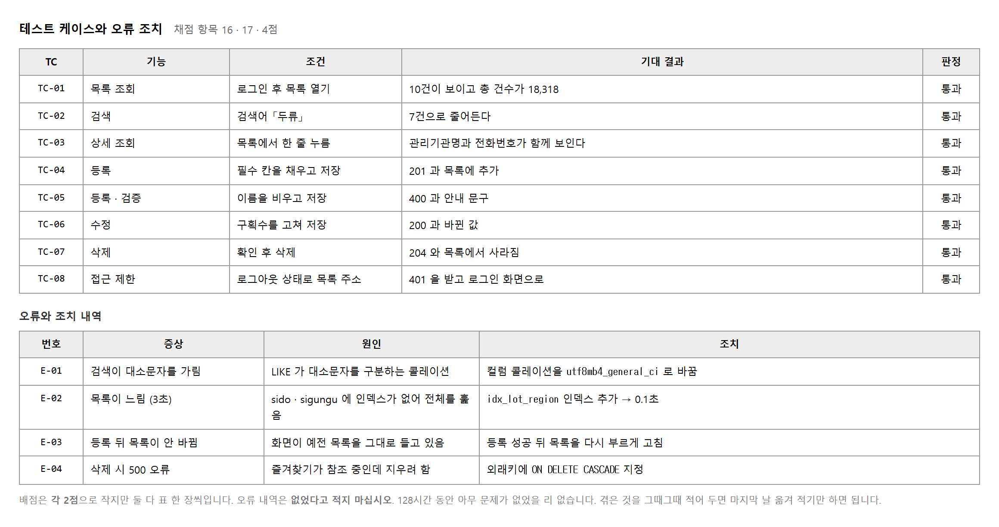
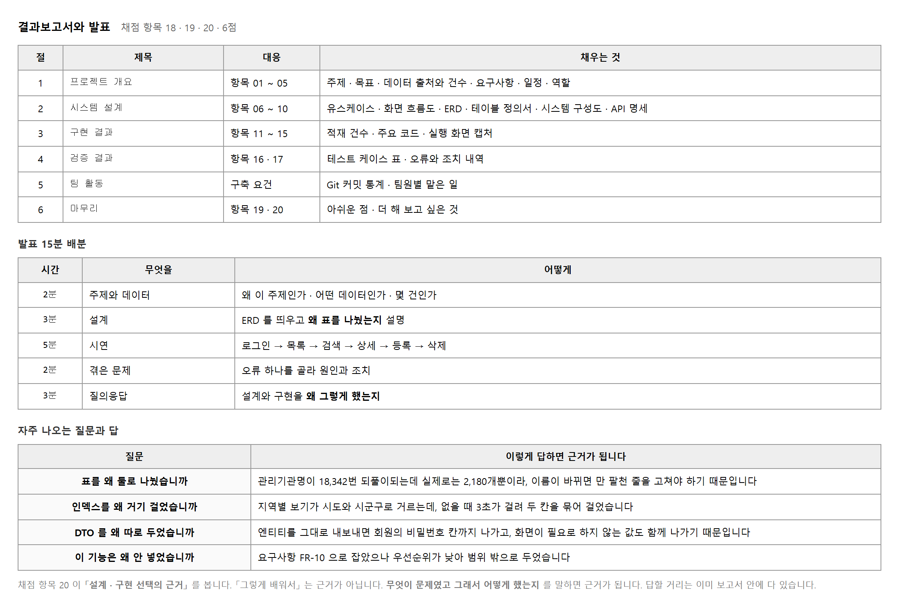
128시간 동안 아무 문제가 없었을 리 없습니다. 「없음」 이라고 적으면 기록을 안 했다는 뜻으로 읽힙니다. 겪은 것을 그때그때 적어 두면 마지막 날 옮겨 적기만 하면 됩니다.
| 이런 것도 오류입니다 | 적을 거리 |
|---|---|
| 한글이 깨져 들어감 | 인코딩을 utf8mb4 로 바꿈 |
| 목록이 3초 걸림 | 인덱스를 걸어 0.1초로 |
| CORS 로 화면이 안 됨 | CorsConfig 추가 |
| 머지 충돌 | 브랜치 규칙을 정하고 다시 나눔 |
15분 중 5분이 시연입니다. 슬라이드로 설명하지 말고 실제로 눌러 보이십시오. 미리 로그인해 두지 말고 로그인부터 시작하면 인증까지 한 번에 보입니다.
bootRun 을 돌리면 기다리는 시간만 1분입니다.채점 항목 20 이 「설계 · 구현 선택의 근거」 를 봅니다. 「그렇게 배워서」 나 「그게 보통이라」 는 근거가 아닙니다. 무엇이 문제였고 그래서 어떻게 했는지를 말하면 근거가 됩니다.
| 이렇게 답하면 근거가 아닙니다 | 이렇게 답하면 근거입니다 |
|---|---|
| 정규화가 필요해서 표를 나눴습니다 | 관리기관명이 18,342번 되풀이되는데 실제로는 2,180개뿐이라, 이름이 바뀌면 만 팔천 줄을 고쳐야 하기 때문입니다 |
| 성능을 위해 인덱스를 걸었습니다 | 지역별 보기가 3초 걸려서 시도와 시군구를 묶어 걸었더니 0.1초가 되었습니다 |
아래 여덟 가지가 되풀이되는 감점입니다. 가장 많이 나오는 것은 설계를 건너뛰고 코드부터 짜는 일입니다. 그렇게 하면 ERD 와 명세서를 나중에 코드에 맞춰 그리게 되고, 설계 30점이 통째로 얇아집니다.
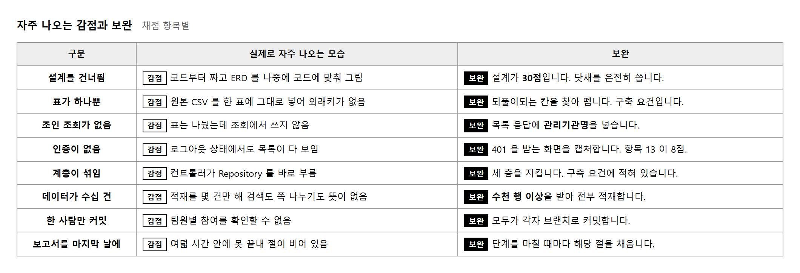